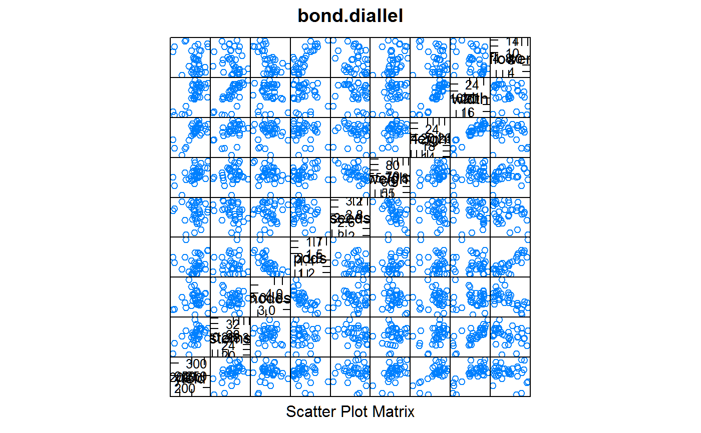
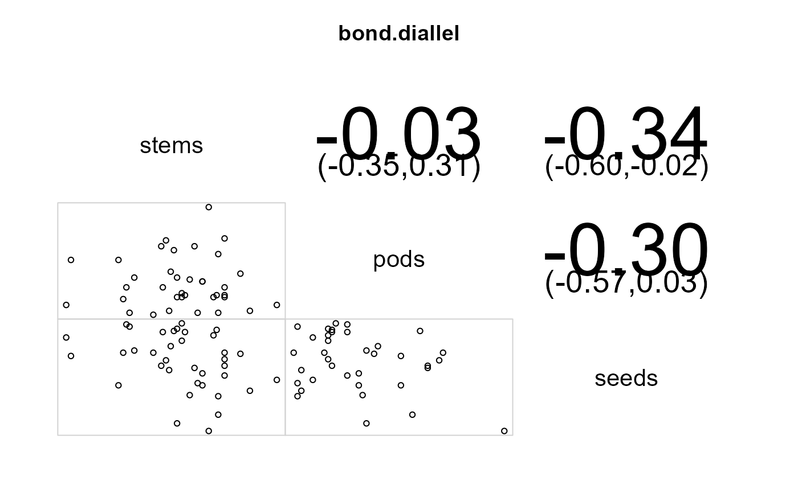

bond.diallel.RdDiallel cross of winter beans
A data frame with 36 observations on the following 3 variables.
femalefemale parent
malemale parent
yieldyield, grams/plot
stemsstems per plot
nodespodded nodes per stem
podspods per podded node
seedsseeds per pod
weightweight (g) per 100 seeds
heightheight (cm) in April
widthwidth (cm) in April
flowermean flowering date in May
Yield in grams/plot for full diallel cross between 6 inbred lines of winter beans. Values are means over two years.
D. A. Bond (1966). Yield and components of yield in diallel crosses between inbred lines of winter beans (Viciafaba). The Journal of Agricultural Science, 67, 325--336. https://doi.org/10.1017/S0021859600017329
Peter John, Statistical Design and Analysis of Experiments, p. 85.
# \dontrun{ library(agridat) data(bond.diallel) dat <- bond.diallel # Because these data are means, we will not be able to reproduce # the anova table in Bond. More useful as a multivariate example. libs(corrgram)#> #>#> #> #>#> #> #>corrgram(dat[ , 3:11], main="bond.diallel", lower=panel.pts)# Multivariate example from sommer package corrgram(dat[,c("stems","pods","seeds")], lower=panel.pts, upper=panel.conf, main="bond.diallel")#>#> #>#> #> #>#> iteration LogLik wall cpu(sec) restrained #> 1 -63.6729 17:31:55 0 0 #> 2 -40.8016 17:31:55 0 0 #> 3 -27.2147 17:31:55 0 0 #> 4 -24.2403 17:31:55 0 0 #> 5 -24.1945 17:31:55 0 0 #> 6 -24.194 17:31:55 0 0#> stems pods seeds #> stems 1.0000000 0.5745963 -0.8714338 #> pods 0.5745963 1.0000000 -0.7946327 #> seeds -0.8714338 -0.7946327 1.0000000#> stems pods seeds #> stems 1.0000000 0.3173646 -0.6610472 #> pods 0.3173646 1.0000000 -0.4276277 #> seeds -0.6610472 -0.4276277 1.0000000#> stems pods seeds #> stems 1.0000000 -0.3354943 0.2294149 #> pods -0.3354943 1.0000000 0.1294200 #> seeds 0.2294149 0.1294200 1.0000000# }